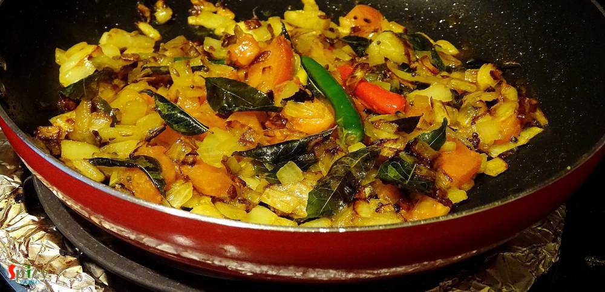

Simple and Easy Recipes
Spicy Urad Dal / Jhal jhal Biulir Dal
© 2016 Spicy World, Published on: Mar 17, 2016
The best and most common weeknight's meal is dal and rice. Nobody likes to eat bland dal, everybody needs some zing to their comfort food sometimes. So, 'spicy urad dal' is my new favourite dal with some kick. You can also call this lentil soup 'tarke wali dal', now everyone has their own story of 'tempering'. I have used lots of garlic, fresh curry leaves, cumin and mustard seeds. But you can add any ingredients of your choice.Everytime it will taste better and better with some simple steamed rice and 'aloo vaja' / potato fries.

Ingredients
- 1 cup of urad dal.
- 1 cup of chopped onion.
- 2 Teaspoons of chopped garlic.
- Half cup of chopped tomato.
- 2 - 3 green chilies.
- Some fresh curry leaves.
- 1 Teaspoon of cumin seeds.
- 1 Teaspoon of black mustard seeds.
- Salt.
- 1 Teaspoon of turmeric powder.
- 1 Teaspoon of red chilli powder.
- 1 Teaspoon of roasted cumin + coriander powder.
- Warm water.
- 2 - 3 Tablespoons of mustard oil.

Steps
Soak the urad dal in water for 1 - 2 hours.
Then put them with some salt, turmeric powder and a cup of water in a pressure cooker. Cook for 15 - 20 minutes. Keep aside.
Heat oil in a pan.
Add garlic, curry leaves, cumin and mustard seeds in hot oil saute for 40 seconds.
Add chopped onion with some salt. Cook for 5 - 6 minutes.
Then add chopped tomato, turmeric + red chilli + cumin + coriander powder. Mix well for 3-4 minutes in medium heat.

After that add the boiled lentils and green chilies. Mix well for 3 minutes.
Then add half cup of water and cook another 7-8 minutes and turn off the heat.
Your spicy urad dal is ready ...
Enjoy this hot with some plain rice ...
")